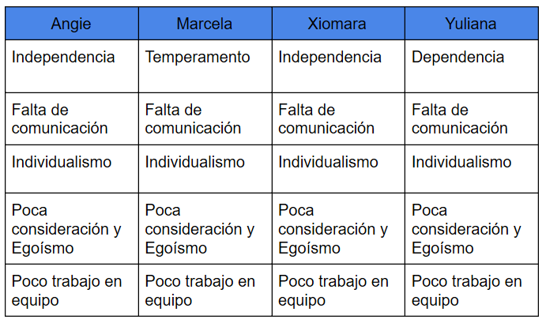

-Comunicación, en cuanto al seguimiento de cada tarea
Aspectos a mejorar
Grupo
-Organización y Planeación
-Comunicación
-Individualidad
-Dependencia de otras tareas
-Unidficacion de tareas
-Poca claridad en las historias de usuario
Individual

Soluciones
-Falta de comunicación: Para solucionar esta falencia, se realizará en cada sesión una reunión que permita conocer los avances de cada integrante.
-Dependencia: Evitar asignaciones de tareas que generen dependencia de otras tareas de cada integrante.
-Independencia: Gracias a las reuniones en cada sesión se hablará acerca de las tareas de modo que no haya individuales en cada tarea y que llegue a afectar a un integrante.
-Individualismo: Cada integrante se compromete a mostrar sus avances.
-Temperamento: Respirar profundo por 5s e intentar comunicarse de manera pasiva
-Poca consideración y Egoísmo: Si un integrante presenta dificultades lo comunicará al grupo para que los demás integrantes puede colaborar y solucionar.
-Falta de trabajo en equipo: Se impulsará la comunicación, ya que la única manera de que todos los miembros de un equipo trabajen como una orquesta es que existan los canales de comunicación adecuados, que se escuchen y haya una retroalimentación.